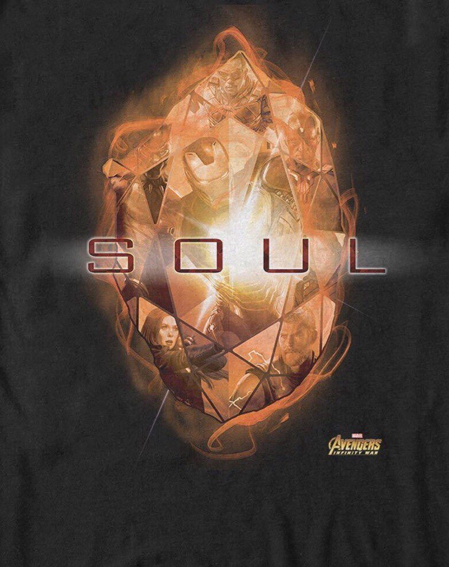
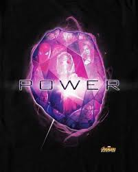
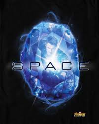

.jfif)
.jfif)
.jfif)
| Название | Информация | Фото |
|---|---|---|
| Камень души | возможно опаснейший из всех, этот камень обладает разумом и испытывает голод, утолить который могут только души. Он позволяет своему владельцу похищать, подчинять и изменять души живых или мёртвых. Адам Уорлок был единственным хранителем этого камня в течение многих лет и чувствовал ответственность за все те души, которые он сам забрал. Как ни странно, камень является вратами в идиллическую карманную вселенную. |  |
| Камень силы | камень имеет доступ ко всей силе и энергии, когда-либо существовавшей или существующей в будущем, питает другие камни и усиливает их эффекты. Камень позволяет владельцу дублировать практически любую физическую сверхчеловеческую способность и становиться неуязвимым, а потому и непобедимым, используя одну лишь сплошную силу. |  |
| Камень времени | камень даёт своему обладателю полную власть над временем. С его помощью становятся доступными или видимыми прошлое, настоящее и будущее. В совершенстве владеющий камнем может использовать его силу как оружие, заманивая в ловушки врагов или даже целые миры в бесконечные петли времени. Камень также может заставить объекты и существ физически возвращаться к юному возрасту или стареть. | |
| Камень пространства | камень позволяет своему владельцу существовать в любом окружающем пространстве, будь то космос или подводные глубины; перемещать объекты, себя и других существ в любой уголок вселенной; деформировать и перестраивать пространство. |  |
| Камень реальности | единственный камень который был в текучем виде. Он позволяет своему владельцу осуществлять любые желания, даже если эти желания противоречат научным законам. Если неосторожно его использовать, камень может привести к бедствию. Затрагивая границу реальности, он вызывает катастрофические повреждения, которые могут быть изолированы только силой Камня пространства, Камня души и Камня силы. | |
| Камень разума | самый разрушительный среди всех. Камень позволяет увеличивать силу сознания владельца и получать доступ к мыслям и снам других существ. Поддерживаемый Камнем силы, с его помощью возможно получить доступ одновременно ко всем существующим разумам. Камень также может выпускать внутренних демонов, кем бы они ни были в других вселенных, и загонять их обратно. | |